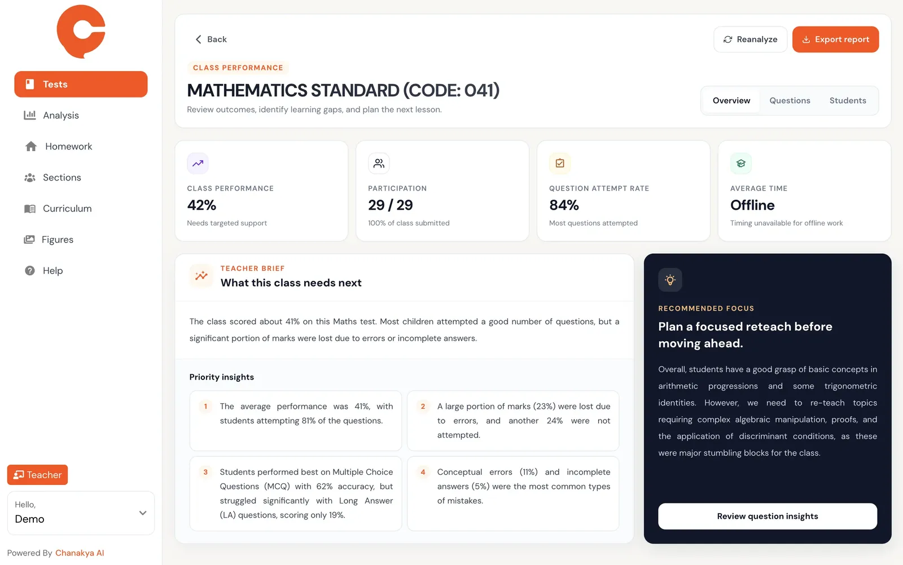

Neurobridge Tech · India
Chanakya AI
Exam automation for schools and institutes. Teachers set papers, students write them by hand as they always have, and AI reads and marks the scanned answer sheets.


The problem
Marking is where teaching time goes. A school running end-of-term exams across a few hundred students is looking at thousands of handwritten pages, read one at a time, by people who would rather be teaching. Chanakya AI's answer was to keep the exam exactly as it is — paper, handwriting, no new habits for students — and automate the reading instead. Teachers set the paper in the platform; scanned answer sheets come back marked.
That is a hard problem to make fast. Handwriting recognition over a full answer sheet is not a single quick call, and the product had found its market before the engineering had caught up with it. The app worked, but it was heavy, slow to start, and getting slower with every release. Technical debt had reached the point where shipping a feature meant risking a regression somewhere unrelated, and the team was spending more time firefighting than building.
The brief was not "add features". It was: make this fast, make it maintainable, and make releases boring.
What we did
Performance
The biggest wins came from how the app handled real-time server-side events. We introduced batch and frame processing so that a burst of incoming events no longer blocked the UI thread — the difference between an app that stutters under load and one that does not.
Alongside that, we went after app size and start-up cost directly: dead code removal, dependency audit, and rebuilding the parts of the render tree that were doing far more work than they needed to.
Codebase
Roughly seventy per cent of the codebase came out. Not by deleting features — by removing duplication, collapsing three near-identical implementations of the same thing into one, and deleting code paths that had been dead for months but were still being maintained by accident.
Release process
We put CI/CD pipelines in through AppCenter. Releases went from a manual event that someone had to own for a day, to something that happened on merge.
The team
Five-plus engineers were mentored through this, with coding standards documented and enforced rather than assumed. The point of that work is that the improvement survives us — a codebase that gets fast once and slowly degrades again has not actually been fixed.
Beyond the code
We consulted directly with the founders on product-market fit and go-to-market strategy. That is not scope creep; it is the reason the engineering decisions were the right ones. Knowing that schools buy in the weeks around an exam cycle, and that a teacher will abandon a tool that is slow on the one day they actually need it, is what made performance the priority over the feature list.
- App performance
- +80%
- Codebase reduced
- −70%
- Engineers mentored
- 5+
- Release cycle
- Automated